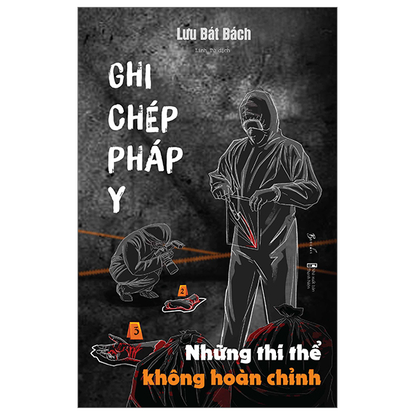

Tô Bình Yên Vẽ Hạnh Phúc
Kulzsc

Trốn Lên Mái Nhà Để Khóc
Lam

Ghi Chép Pháp Y - Những Thi Thể Không Hoàn Chỉnh
Lưu Bát Bách

Đám Trẻ Ở Đại Dương Xanh
Châu Sa Đáy Mắt

Ghi Chép Pháp Y - Những Cái Chết Bí Ẩn
Lưu Hiểu Huy
Tô Bình Yên Vẽ Hạnh Phúc
Tác giả: Kulzsc
Nhà xuất bản: NXB Phụ Nữ Việt Nam
88.000đ
Tô Bình Yên Vẽ Hạnh Phúc
Sau thành công của cuốn sách đầu tay “Phải lòng với cô đơn” chàng họa sĩ nổi tiếng và tài năng Kulzsc đã trở lại với một cuốn sách vô cùng đặc biệt mang tên: "Tô bình yên - vẽ hạnh phúc” – sắc nét phong cách cá nhân với một chút “thơ thẩn, rất hiền”. Không giống với những cuốn sách chỉ để đọc, “Tô bình yên – vẽ hạnh phúc” là một cuốn sách mà độc giả vừa tìm được “Hạnh phúc to to từ những điều nho nhỏ” vừa được thực hành ngay lập tức. Một sự kết hợp mới lạ đầy thú vị giữa thể loại sá...